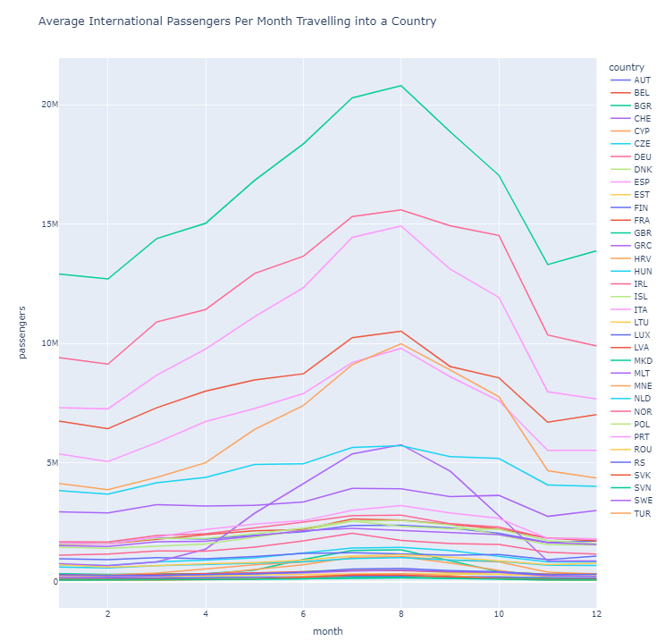

Tourism in Europe Throughout the Year
The tourism industry in Europe generates a lot of income for many different countries.
Europe receives hundreds of millions of tourists each year which oftentimes leads to crowding, especially near tourist attractions.
Some people do not mind the clutter, yet many tourists struggle to find the right time to visit a country in Europe when it is least touristy.
Some people feel the experiences are diluted when countries are overrun with tourists and that it takes away the authentic feeling of visiting a new country.
We aim to find when each country’s tourism is in its peak season and has a high population of tourists and when it is in its low seasons where less tourists are present.
Our visualizations will express this by showing the concentrations of passengers who fly international to each European country throughout each month of the year. We address the following three questions:
1. How busy is each country each month or the year with visitors from other countries?
2. When are the peak and low seasons for tourism in each European country?
3. How does the number of passengers entering each country change throughout the year?

Map of International Passengers Arriving Throughout the Year
This visualization allows the user to see how busy a country is with tourists in each given month and how it changes throughout the years.
Users can explore the data through an interactive map and slider. Key features include:
1. Map Representation: A map of Europe displaying countries colored according to tourist "busyness," with darker red indicating /”hotter” tourist activity and lighter red indicating lower/”less hot” activity.
2. Interactive Slider: Users can select a specific month to observe changes in tourist activity throughout the year.
3. Year Selection: Users can choose between viewing the average tourist activity from 2005 to 2020 or select a specific year within that range.
4. Hover Information: Hovering over a country reveals the total number of international passengers arriving in that country for the selected month.
Monthly passenger Star Plot (Visualization 2)
This visualization allows the user to select a country and look at the distribution of international passengers flying into that country over all 12 months of the year through a star graph. The design of the star graph allows for users to compare popular vs uncrowded months, as well as visualize the changes over each of the 4 seasons in a year.
Key features include
- Interactive map: Users are able to select the country they desire. As soon as a country is selected, it is highlighted in green to display the geographic region relevant to the respective star plot.
- Star Plot: The appropriate data (i.e. average number of flights across the years 2005-2021 of the number of passengers in each country per month) is shown as a star graph with 12 partitions, one for each month of the year.
- Hover Information: Hovering over a particular data point in the star graph reveals the total number of international passengers arriving in that month for the currently selected country.
Enhancement
- Grouping of climate regions: Instead of showing data only per country, a radio button next to the map of Europe makes it possible to group countries based on their approximate climate regions. Mediterranean countries such as Italy, Greece, Spain but also nordic countries such as Sweden, Norway and Finland can be grouped together since they might follow the same distribution of tourism over the year. In order to clarify which countries belong to a certain group, the name of each country is listed next to the respective radio button.
- Comparing years of the same country: Instead of showing the average number of flights across multiple years, this enhancement is focused on comparing two particular years for a selected country with one another in absolute numbers. This makes it possible to e.g. better understand the implications of lockdowns (comparing 2019 and 2020 for countries such as Spain) but also provide a general understanding by how much air traffic has increased over a certain timeframe.